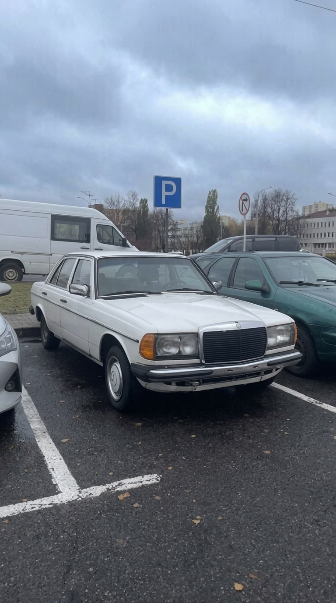
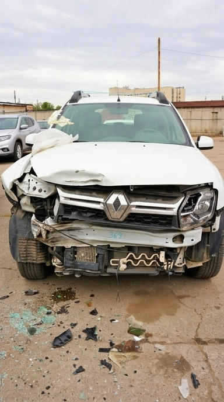
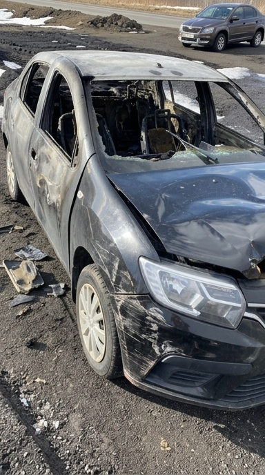
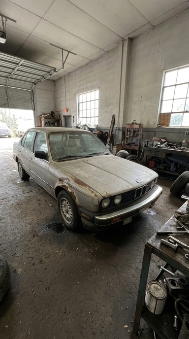
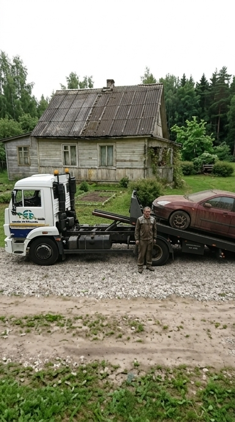
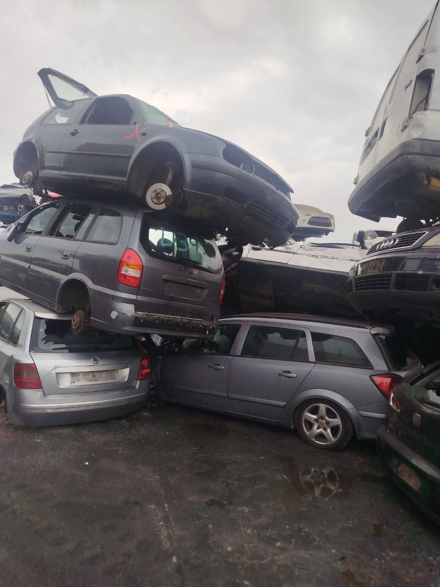

Выкуп старых и проблемных авто на утилизацию
Машина стоит, налог начисляется, ремонт дороже её самой. Забираем такие автомобили с вывозом и платим на месте — до погрузки.
- ✓ Собственный вывоз
- ✓ Работаем ежедневно
- ✓ Документы для ГАИ
Оценить автомобиль
Напишите в Telegram или позвоните. Отвечаем ежедневно с 8:00 до 21:00.
✈️ Написать в Telegram 📞 +375 (29) 228-23-55Год:
На ходу: да/нет
Город или район:
Документы на руках: да/нет
Документы понадобятся при оформлении сделки. Без документов, подтверждающих право собственности, автомобиль не принимаем.
Что мы принимаем
Выкуп авто на утилизацию
Платим за автомобиль как за лом с агрегатами — не берём денег за вывоз.
Подробнее →Битые и после ДТП
Повреждён кузов, сработали подушки, восстановление невыгодно.
Подробнее →Не на ходу
Не заводится, сломан двигатель или коробка — забираем лебёдкой.
Подробнее →Старые автомобили
От советской классики до иномарок 90-х и 2000-х годов.
Подробнее →Авто на запчасти
Разукомплектованные и донорские машины — покупаем целиком.
Подробнее →Документы
Договор оформляем на месте: подтверждает передачу автомобиля и сумму расчёта.
Подробнее →Почему выбирают нас
Считаем по массе
Оценка по реальному содержанию чёрного и цветного металла и по сохранности агрегатов. Объясняем, из чего сложилась сумма.
Можем вывезти
Если машина не на ходу — организуем вывоз. Не нужно искать буксир и платить за доставку.
Документы сразу
Договор оформляем на месте вместе с расчётом. Копию сразу отдаём на руки.
Быстрая оценка
Предварительная сумма по фото за 15–30 минут. Выезд по Минску обычно в течение дня.
Деньги до погрузки
Наличными или переводом на карту. Никаких «оплатим после переработки».
Вся Минская область
Выезд за наш счёт. Для дальних районов согласуем время заранее.
Как проходит сделка
Заявка
Звонок или фото машины в Telegram для предварительной оценки.
Выезд и осмотр
Специалист приезжает бесплатно, проверяет состояние и документы.
Расчёт и эвакуация
Деньги до погрузки, погрузка лебёдкой за наш счёт.
Документы
Договор оформляем сразу на месте, копию отдаём на руки.
Почему тянуть с этим дорого
Неэксплуатируемые транспортные средства в Беларуси регулируются Указом Президента №348. С 13 ноября 2026 года вступают в силу изменения по Указу №270: процедура ускоряется, а срок обращения в суд о признании автомобиля бесхозяйным сокращается с 30 до 10 дней.
На практике это значит: если машина стоит во дворе многоквартирного дома в неисправном состоянии, её могут принудительно переместить на охраняемую стоянку. По Минску с 25 октября 2026 года эвакуация стоит 200 BYN, хранение — 16 BYN в сутки. За три месяца стоянки счёт превысит 1 600 BYN, и платить его будет владелец.
Подробный разбор процедуры и расчёт расходов — в статье Что будет с брошенным автомобилем после 13 ноября 2026 года.
Какие автомобили забираем
Машины, которые прошли через нашу площадку: от «не на ходу» до требующих капитального ремонта.






Что сфотографировать, чтобы получить точную цену
Чем лучше фото — тем точнее предварительная сумма и тем меньше торга на месте.
📸 Минимум кадров
- три четверти спереди;
- три четверти сзади;
- профиль сбоку;
- подкапотное пространство;
- салон;
- повреждения крупным планом, если есть.
✍️ Что написать
- марка, модель, год выпуска;
- на ходу или нет — и что именно не работает;
- адрес стоянки и условия подъезда;
- сохранились ли документы;
- есть ли ограничения: розыск, арест, кредит.
Частые вопросы
Сколько вы платите за автомобиль?
Сумма зависит от массы автомобиля, содержания чёрного и цветного металла, комплектности и состояния агрегатов. Назвать точную цифру «по телефону» невозможно — её видно по фотографиям. Пришлите 5–7 снимков в Telegram, и мы ответим с предварительной стоимостью в течение 15–30 минут.
Вы приедете, если машина не заводится?
Да. Организуем вывоз: неходовые автомобили забираем штатно. Единственное условие — должен быть доступ для подъезда. Если машина стоит в подземном паркинге или за плотным забором, сообщите заранее: согласуем способ погрузки.
Нужно ли снимать автомобиль с учёта самому?
Да, это процедура владельца. Мы оформляем договор на месте и сразу отдаём копию на руки. Пошаговый порядок описан на странице Документы.
Когда я получу деньги?
На месте, до погрузки. Наличными или переводом на карту — как удобнее. Никаких «оплатим после переработки».
Работаете ли вы по Минской области?
Да, по всей Минской области. Выезд и погрузка за наш счёт. Если автомобиль находится далеко от Минска, согласуйте время заранее — маршрут планируется, поэтому выезд может занять 1–3 дня.
Какие документы нужны?
Паспорт владельца. Документы нужны при оформлении сделки — для предварительной оценки по фото достаточно марки, года и описания состояния. Без документов, подтверждающих право собственности, автомобиль не принимаем.
Вы покупаете автомобили, которые в розыске или под арестом?
Нет. Если на автомобиле есть ограничения, сделка невозможна до их снятия. Проверьте статус заранее — это сэкономит время и вам, и нам.
Полезное
Что будет с брошенным автомобилем после 13 ноября 2026
Указ №270, новые сроки и тарифы: 200 BYN эвакуация, 16 BYN в сутки хранение.
Подробнее →Документы для утилизации
Что подготовить, что вы получают на руки и как снять авто с учёта.
Подробнее →Как проходит сделка
Пять шагов от заявки до документов — без скрытых платежей.
Подробнее →Оценим ваш автомобиль бесплатно
Пришлите фото в Telegram — назовём предварительную стоимость и согласуем выезд. Оценка и эвакуация по Минской области за наш счёт.